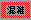
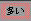
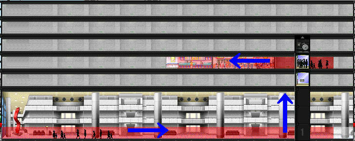
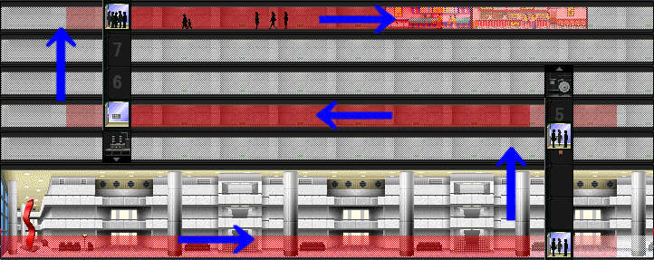

建築物内のフロアごとの人の流れとその量です。通行量は色分けして表示されます。通行量は下の4種類に区分けされます。
| 混雑 | 赤色 |  |
| 多い | ピンク |  |
| 普通 | 薄ピンク | |
| 少ない | 白色 |
コントロールパレット→通行量ボタン
「ザ・タワーⅡ」では、住人たちはあらゆる階で移動設備の乗り継ぎを行います。従って、その配置によって通行路
には自然に通行量の大小が発生します。テナントの前の往来によって発生する騒音に、こと住宅やホテルなどの住人
はデリケートです。あまり騒音が激しいと、これがストレスの原因となってテナントから出て行ってしまいます。これが通行量と騒音
の関係です。
しかしこの通行量はあながち悪いことばかりとはいえません。見方を変えれば、通行量の激しい場所というのは
商用テナントにとってはむしろ絶好の立地でもあるのです。
住人たちからクレームを受けないように通路にメリハリを付けて
設置テナントを選択する、高度なマーケティング・センスがあなたには要求されます。
通行量が少ないほうが適しているということはすなわち騒音が少なければよいテナントになります。
これは騒音があると中にいる住民が気分を害し、評価を下げるということになります。ですから中に特定の住人がいるテナントは少なくとも
通行量をなくさくてはいけません。
TowerⅡには特定の住人が住むテナントとして、賃貸住宅、分譲住宅、コンドミニアムなどがあります
（マップにより異なる）。これらのテナントは住人が実際に住んでおり、ストレスをため続けていくためストレスの原因となる騒音は
限りなく０にしなければいけません。さもないとTowerⅡの中でもっともストレスを受けやすい住人たちは、ストレスをため続け、最後のはテナントを後にしていってしまいます。
また特定の住人はいない物の、通行量があると業務に支障をきたすテナントもあります。オフィスやホテルがそうで、特にホテルは通行量（騒音）があると
宿泊客の評価を下げることになり、結果的にホテル客はその部屋には泊まらなくなってしまいます。以下は騒音に厳しいテナントから順番に書いてあります。
| 高い | 分譲住宅・コンドミニアム |
| ↑ | ホテル |
| ↓ | 賃貸住宅 |
| 低い | オフィス |
通行量が多いほうが適しているテナントということは、騒音が多くても、人通りがあったほうがいいというテナントです。 具体的には、レストランやショップなどです。これらのテナントの多くは通行量と売り上げが比例しています。ですので、レストラン やショップなどは通行量の多い場所に作るのがベストです。レストランとショップではレストランの方が通行量と密接の関係があります。
通行量というのは人の流れなので人為的に作ることもできます。例えばテナントを何階に作ったとしても全ての人の住人はロビーから 入ってくるのでテナントに行くためには移動設備が必要です。つまりどのようなところにあるテナントでもロビーに接続されたエレベータやエスカレータなどで、住人はテナントに行くわけです。 以上のことより、移動設備の組み合わせ、人の流れを作ることもできるのです。下の写真１を見てください。
この写真では、ショップに行くためにロビーの左端(入り口)から、エレベータ、フロアを通っていきます。 次に写真２を見てください。
今度は５階でエレベータを乗り換えてショップまで行っています。つまり人の流れは
ロビー入り口→エレベータ（１階～５階）→５階フロア→エレベータ→８階フロア→ショップとなります。
写真１と２はショップは同じなのに通行量の多い部分が増えています。もともと通行量とはあるテナントまで行く人々の流れ
でもあります。つまり通行量をあげようとするならば人々が目的とする場所までの移動設備間や通路を長くすれば言い訳です。
ビルが大きくなっていくと通行量の問題は一層深刻になって行きます。なぜなら行き先にたくさんの人々が行くとするとその通行量も比例して上がっていきますから、移動設備には負担がかかるからです。
新宿マップでは中盤を過ぎるあたりから乗り継ぎ専用の大型エレベータが登場します。このエレベータを使い乗り継ぎを複雑化していき、個々のエレベータの負担を減らしていくのです。しかし問題もあります。
TowerⅡの住人たちは最も近い経路で目的地まで行こうとしますから、思った用に人の誘導がいかないことがあります。写真３を見てください。
写真３では写真２のエレベータを５階までのを８階まで伸ばした物です。青矢印のとおり人々はロビーから直接ショップまでいているので、水色の経路の５階～８階のエレベータは使用していません。
なので、エレベータを乗り通ため５階～８階の通行量は０になります。
人々を誘導するためには以上のように
エレベータやエスカレータなどの移動設備間が重要です。しかし移動設備が複雑化しすぎると人々は最も近い経路をとったり、予期せぬ道を通ってしまいます。
通行量を人為的に作る方法により通行量を確保することは移動設備を乗り続けることに直結します。しかし どんな移動設備に乗るのにも若干のストレスがたまります。また移動設備に乗り続けることによりストレスがたまって、テナントの評価が落ちてしまうこともあります。 そのため人々集めるテナントは慎重に選らばなければなりません。例えばオフィスやホテルに行くために多重の乗り継ぎをしなくてはならないとすると、オフィスやホテルの住人たちは ストレスを覚えるでしょう。またレストランやショップのために通行量をあげるのでそれ自体は客引きに使えません。 そこでTowerⅡには集客専門のテナントが用意されています。TowerⅡではこれらのテナントは総称して都市機能と呼ばれています。ここにやってくる人たちは往復に 多少時間がかかってもその道すがらショップやレストランによっていってくれます。以下に集客に向くテナントを順に書いていってあります。
| 高い | 地下鉄駅、船着場 |
| ロードショー館、いこいの広場 | |
| イベントホール、名画座 | |
| ショップ | |
| レストラン | |
| オフィス | |
| ホテル | |
| 低い | ビル設備 |
映画館や、地下鉄駅などの都市機能で誘導した人の流れは、その多くが一部の客層に集中しています。そのため、都市機能で作った通行量の多い場所に ショップやレストランを置いたとしても必ずしも儲かるわけではありません。なぜならばどんなに通行量があろうとも、集客した客層とレストランやショップの客層が一致しなくては人々は お金をおとしていってはくれないからです。例えば、客単価が高いすし屋やフランス料理などは客単価の高い通行量のある場所に設置しなければ儲かりません。 すなわち集客をするテナントがどのような客層を集めるのかを把握しなくてはなりません。しかもそれらによってできた通行料の多い場所に同じ客層を必要とする テナントを配置しなくてはなりません。以下は集客に向くテナントの一覧に対応させた客層表です。
| 地下鉄駅 | サラリーマン |
| 船着場 | レジャー客 |
| ロードショー館 | 学生、青年 |
| いこいの広場 | 一般 |
| イベントホール | 青年、壮年 |
| 名画座 | 中高年 |
| レストラン、ショップ | 一般 |
| オフィス | サラリーマン |
| ホテル | 金持ちレジャー客 |
| ビル設備 | テナント従事者 |
サラリーマン層の集客には地下鉄駅のほかにオフィス帰りの客を誘導する方法があります。 TowerⅡのオフィスで働いている人たちは５～６時ごろになると帰り始めるので、その時間ごろに始まり客層が一致する居酒屋などを ロビーに下りる移動設備間に設置するのです。
金持ち層を集客するのは容易ではありません。都市機能のテナントに金持ち層を集めるテナントがないこと。 しかも単純にビル内に入ってくる絶対量も少数です。この場合はリゾートをしにくるホテル客に焦点を当てます。 ホテル客はみな金持ちなので（シングルルームは分からない）ホテルに行く間の移動設備間にすし屋やフランス料理などを設置します。